Cavern known for The Big Room, a large limestone chamber, which is almost 4,000 feet (1,220 m) long, 625 feet (191 m) wide, and 255 feet (78 m) high at its highest point and is the largest chamber in North America
Last Entrance Ticket Sold: 2:15pm
Hike INTO the Cavern
8:30am to 2:30pm
Elevators
8:30am to 2:30pm
Children (ages 15 and under): Free
Accepts America The Beautiful Pass for Entrance fee additonal fees for ranger-guided tours.
From El Paso (149mi) Get on I-10 E. Take US-180 E/US-62 E to NM-7 W in Eddy County. Turn left onto NM-7 W.
Overview
Carlsbad Caverns National Park in the Guadalupe Mountains of southeastern New Mexico protects more than 119 known caves, formed when sulfuric acid dissolved a huge ancient limestone reef, and is best known for Carlsbad Cavern. The cavern's showpiece is the Big Room, a single chamber nearly 4,000 feet long and 255 feet high that is among the largest cave chambers in North America. It is filled with stalactites, stalagmites, columns, and draperies. The park is a UNESCO World Heritage Site, and its caves hold some of the most extravagantly decorated underground rooms anywhere.
Carlsbad Cavern was explored in the early 1900s by a local cowboy, Jim White, and the site was proclaimed a national monument in 1923 and a national park in 1930, to protect the cave's fragile formations. Visitors come to walk down through the huge natural entrance or ride the elevator into the Big Room, join a ranger-led tour of the less-visited chambers, and watch the evening bat flight, when hundreds of thousands of Brazilian free-tailed bats spiral out of the cave at dusk. The caves stay about 56 °F year-round, so the park is a popular escape from the desert heat above.
Park Sections
The park has three main areas. The main section, around the visitor center and the cavern entrance, is reached by the 7-mile Carlsbad Cavern Highway off US-62/180, and it holds the Natural Entrance, the Big Room, and the bat flight amphitheater. Slaughter Canyon, to the southwest, is reached by a separate road off US-62/180 and has the wild-cave tour of Slaughter Canyon Cave, about 25 miles from the visitor center. Rattlesnake Springs is a detached unit on a desert spring south of Whites City, known for birding and picnicking. Most of the rest of the park is rugged backcountry wilderness reached by trails from the Walnut Canyon Desert Drive.
Sightseeing and Exploring the Park
Above ground, the main scenic drive is the 9.5-mile one-way Walnut Canyon Desert Drive, a gravel loop that starts near the visitor center and winds through desert canyons with pull-offs and views of the Chihuahuan Desert. The Walnut Canyon Overlook looks down into the canyon and across the surrounding desert. The road is open to most passenger cars when it is dry but is not recommended for trailers or large RVs, and it can close in wet weather. The drive up to the visitor center on the Carlsbad Cavern Highway also offers views of the desert and the Guadalupe Mountains.
Hiking
Underground, the two main walking routes are the Natural Entrance Trail, a steep 1.25-mile descent of about 750 feet, and the Big Room loop, an easier route of about 1.25 miles on a paved trail. Visitors who skip the walk down can ride the elevators. Above ground, the Chihuahuan Desert Nature Trail is a short and easy loop of about half a mile with desert plants, while the Yucca Canyon Trail and other backcountry routes are longer, steeper, and more rugged, with little shade or water. Backcountry hikers need a free permit for overnight trips.
Other Activities
Beyond the self-guided routes, the park offers a full menu of ranger-guided cave tours, which require separate reservations. The King's Palace tour is the most popular guided tour and visits four of the cave's most decorated rooms. The Left Hand Tunnel tour is a lantern-lit walk through an undeveloped passage. Adventure tours include the strenuous Lower Cave tour with ropes and ladders, the very strenuous Hall of the White Giant tour with crawling and tight spaces, and the wild-cave Slaughter Canyon Cave tour. Tours are described in detail below. In the evening, the free bat flight program, held at the cave's natural entrance, runs seasonally. Electronics, including phones and cameras, are not allowed at the bat flight amphitheater. There are no commercial outfitters in the park.
Flora and Wildlife
The park's best-known wildlife is the Brazilian free-tailed bat, which lives in the cave from about spring to October. Nightly flights begin at dusk, and the best viewing is in the summer. Above ground, the Chihuahuan Desert is home to plants such as agave, ocotillo, sotol, prickly pear, and yucca, which bloom in spring. Mule deer, coyotes, gray foxes, roadrunners, javelinas, and rattlesnakes live in the desert, and ringtails sometimes show up near the visitor center. Rattlesnake Springs is a spring-fed oasis and one of the best birding spots in the region, with hundreds of bird species recorded, including vermilion flycatchers and yellow-billed cuckoos. Viewing is mostly self-guided, with ranger talks at the bat flight.
Access
The park is in the southeast corner of New Mexico near the Texas border, about 27 miles southwest of Carlsbad and 7 miles from the village of Whites City on US-62/180. Nearly everyone arrives by car on paved roads. El Paso, Texas, is about 150 miles west and about 2.5 hours away, and Midland-Odessa, Texas, is about 2.5 hours east. Albuquerque is about 5.5 hours north. There is no public transportation to the park, and the closest airports are a small regional airport in Carlsbad and larger airports in El Paso and Midland. Cell service is limited in the park.
Seasons
The cave stays about 56 °F all year, so Carlsbad is a year-round destination. Summer is the busiest season, with hot days above ground and the nightly bat flights, so cave tickets can sell out. Spring and fall are milder and good for hiking and desert wildflowers. Winter is quieter and mild, with occasional freezing nights, and the bat flight does not run when the bats migrate south. Check the park website for tour schedules and for closures such as Christmas Day. Some desert roads, including the Walnut Canyon Desert Drive, can close temporarily after heavy rain.
Camping and Lodging
There is no lodging and no developed campground in the park, although backcountry camping is allowed with a permit. The nearest lodging is in Whites City, about 7 miles from the visitor center, which has a few motels and an RV park. Carlsbad, about 27 miles northeast, has many hotels, motels, restaurants, and a campground at nearby Brantley Lake State Park, about 30 minutes north of the city. Across the Texas state line, Guadalupe Mountains National Park has campgrounds, and Pecos, Texas, and Roswell, New Mexico, about two hours north, offer further lodging.
Visitor Centers
The Carlsbad Caverns Visitor Center, near the cave entrance, is the park's only visitor center. It has exhibits, a film, a bookstore, a gift shop, and a restaurant, along with the ticket desk and the elevators to the Big Room. Rangers here sell tickets for guided tours, issue backcountry permits, and provide current information about tours and bat flights. An underground rest area in the cave also has restrooms, a snack bar, and a gift shop. Hours vary by season, and the last entrance ticket is sold early in the afternoon, so check the National Park Service website before you go.
Highlights
- Big Room: an easy 1.25-mile loop, or 0.6 miles by shortcut
- Natural Entrance: a steep 1.25-mile trail that drops about 750 feet, or take the elevator
- King's Palace and Left Hand Tunnel: guided tours (reservations required)
- Slaughter Canyon Cave: a wild-cave adventure tour
- Bat Flight: Brazilian free-tailed bats leave the cave at dusk from late spring to October
- Rattlesnake Springs: an oasis for birding, in a separate unit
Cave Tour Options
Tour options range from moderate walking tours to strenuous caving adventures involving ladders, uneven terrain, and confined spaces. All ranger-guided tours require separate reservations in addition to the park entrance requirements.
| Tour | Duration | Difficulty | Overview |
|---|---|---|---|
| Big Room Self-Guided Tour | 1–2 Hours | Easy | Explore the park's most famous chamber featuring massive cave formations, paved trails, and interpretive exhibits. |
| Natural Entrance Trail | 1–2 Hours | Moderate | Descend through the historic natural entrance used by early explorers and experience the transition from daylight into the cave. |
| King's Palace Tour | 1.5 Hours | Moderate | Visits several beautifully decorated rooms including King's Palace, Queen's Chamber, Papoose Room, and Green Lake Room. |
| Left Hand Tunnel Tour | 2 Hours | Moderate | A lantern-lit tour through an undeveloped section of the cave, providing a glimpse of early cave exploration conditions. |
| Lower Cave Tour | 3 Hours | Strenuous | An adventure tour using ropes and ladders to access remote cave passages and formations. |
| Hall of the White Giant Tour | 4 Hours | Very Strenuous | The park's most challenging tour involving crawling, scrambling, steep climbs, and tight spaces. |
Tour Categories
- Self-Guided Experiences – Big Room and Natural Entrance routes allow visitors to explore the most famous areas of the caverns at their own pace.
- Classic Ranger-Guided Tours – King's Palace Tour showcases some of the cave's most impressive formations and historic chambers.
- Lantern Tours – Left Hand Tunnel Tour recreates the atmosphere of historic cave exploration.
- Adventure Caving Tours – Lower Cave and Hall of the White Giant provide physically demanding experiences in undeveloped portions of the cave.
Pricing Overview
| Experience | Typical Adult Price |
|---|---|
| Carlsbad Caverns Timed Entry Reservation | Approximately $1 reservation fee plus park entrance requirements |
| King's Palace Tour | Approximately $8 |
| Left Hand Tunnel Tour | Approximately $10 |
| Lower Cave Tour | Approximately $20 |
| Hall of the White Giant Tour | Approximately $20 |
The average cost of the primary ranger-guided tours is approximately $15 per adult. Self-guided experiences require only the park entrance fee and timed-entry reservation, making Carlsbad Caverns one of the most affordable cave destinations in the National Park System.
Highlights
- Big Room, one of the largest underground chambers in North America.
- Dramatic Speleothems including stalactites, stalagmites, columns, draperies, and flowstone formations.
- Historic Natural Entrance used by explorers prior to the installation of elevators.
- Lantern-Lit Exploration in undeveloped cave passages.
- Adventure Caving Opportunities featuring ladders, ropes, and challenging terrain.
- Evening Bat Flights during seasonal operations, when thousands of Brazilian free-tailed bats emerge from the cave entrance.
Recommended Tours for First-Time Visitors
- Big Room Self-Guided Tour for the park's most iconic cave experience.
- Natural Entrance Trail for visitors interested in experiencing the original route into the caverns.
- King's Palace Tour for the best combination of cave formations, history, and ranger interpretation.
- Left Hand Tunnel Tour for visitors seeking a more authentic and less-developed cave experience.
Information in this article is based on cave tour descriptions, reservation information, and visitor resources provided by the Carlsbad Caverns National Park Things To Do, Carlsbad Caverns National Park Fees & Passes, and Recreation.gov. Additional information comes from the National Park Service Carlsbad Caverns National Park website.
This article uses material from the Wikipedia article "Carlsbad Caverns National Park", which is released under the Creative Commons Attribution-Share-Alike License 3.0
Featured Locations
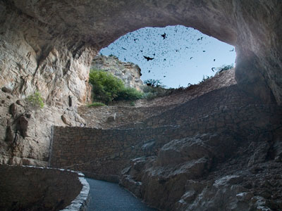
Jeff P from Berkeley, CA, USA, CC BY 2.0, via Wikimedia Commons; Image Size Adjusted
.jpg){kind=link}
Bat Flight
Evening natural spectacle where thousands of bats emerge in spiraling formations from a cavern entrance to begin their nightly hunt.
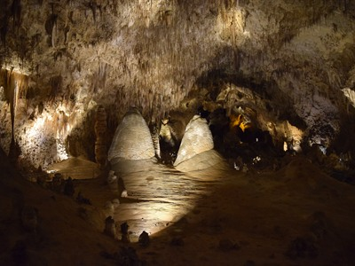
Daniel Mayer, CC BY-SA 3.0, via Wikimedia Commons; Image Size Adjusted
Big Room Tour
Massive underground chamber featuring a paved loop trail surrounded by towering stalactites, stalagmites, and other intricate cave formations.

Jeff P from Berkeley, CA, USA, CC BY 2.0, via Wikimedia Commons; Image Size Adjusted
Chihuahuan Desert Nature Trail
Interpretive desert loop trail showcasing native plants, rocky canyon landscapes, and sweeping views that introduce visitors to the ecology of the Chihuahuan Desert.
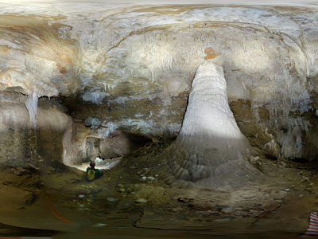
Jeff P from Berkeley, CA, USA, CC BY 2.0, via Wikimedia Commons; Image Size Adjusted
Hall of the White Giant
Challenging guided caving route through narrow passages and rugged terrain leading to a chamber with a prominent white stalagmite formation.
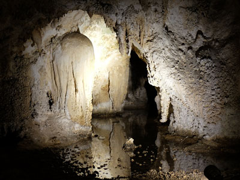
Jeff P from Berkeley, CA, USA, CC BY 2.0, via Wikimedia Commons; Image Size Adjusted
Kings Palace
Guided cave tour passing through a series of richly decorated chambers featuring dramatic formations, deep underground passages, and intricate limestone structures.
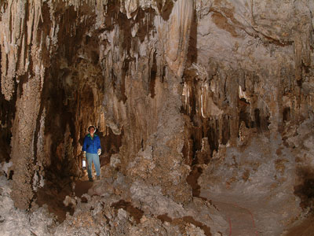
Jeff P from Berkeley, CA, USA, CC BY 2.0, via Wikimedia Commons; Image Size Adjusted
Left Hand Tunnel
Lantern-lit guided cave experience along an undeveloped dirt path with uneven terrain and minimal lighting that recreates early exploration conditions.
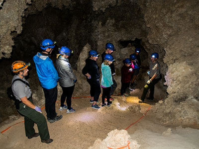
Jeff P from Berkeley, CA, USA, CC BY 2.0, via Wikimedia Commons; Image Size Adjusted
Lower Cave
Strenuous guided cave expedition involving ladder descents, rope-assisted slopes, and navigation through narrow passageways to view rare and delicate underground formations.
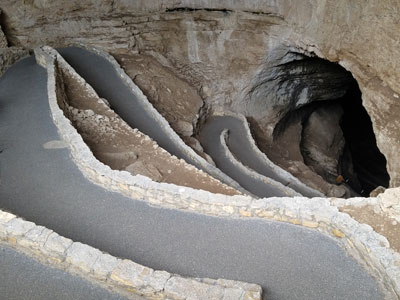
Jeff P from Berkeley, CA, USA, CC BY 2.0, via Wikimedia Commons; Image Size Adjusted
Natural Entrance
Steep paved trail descending through a natural cave opening into a vast underground system with dramatic rock formations and a gradual transition from daylight to darkness.
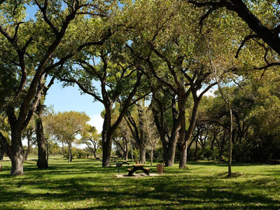
Jeff P from Berkeley, CA, USA, CC BY 2.0, via Wikimedia Commons; Image Size Adjusted
Rattlesnake Springs
Shaded desert oasis featuring a freshwater spring, cottonwood trees, and open grassy picnic areas popular for birdwatching and relaxing outdoors.
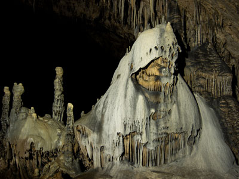
Jeff P from Berkeley, CA, USA, CC BY 2.0, via Wikimedia Commons; Image Size Adjusted
Slaughter Canyon Cave
Strenuous ranger-guided cave adventure through undeveloped passages reached by a steep desert hike and featuring massive limestone formations in a remote underground setting.
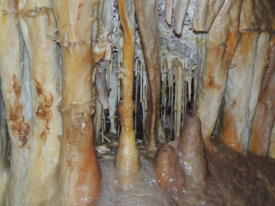
Jeff P from Berkeley, CA, USA, CC BY 2.0, via Wikimedia Commons; Image Size Adjusted
Spider Cave
Extremely strenuous “wild cave” expedition through a complex maze of narrow passages requiring crawling, climbing, and navigating tight spaces deep underground.
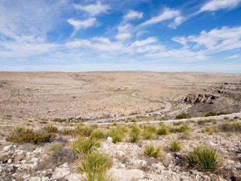
Jeff P from Berkeley, CA, USA, CC BY 2.0, via Wikimedia Commons; Image Size Adjusted
Walnut Canyon Desert Drive
Scenic paved loop drive winding through desert landscapes, canyon views, and native vegetation with multiple pullouts for wildlife viewing and short walks.
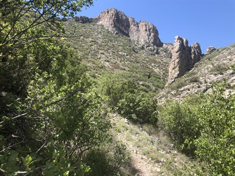
Jeff P from Berkeley, CA, USA, CC BY 2.0, via Wikimedia Commons; Image Size Adjusted
Yucca Canyon Trail
Remote backcountry hiking route traversing desert canyon terrain with expansive views, rugged slopes, and sparse vegetation.
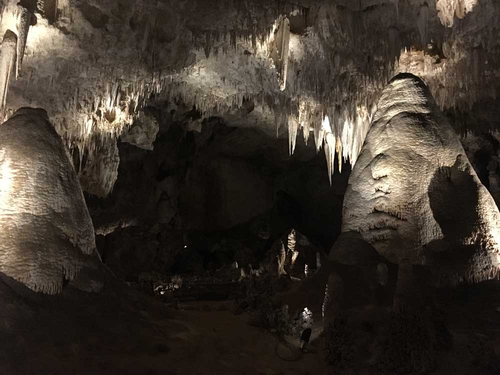
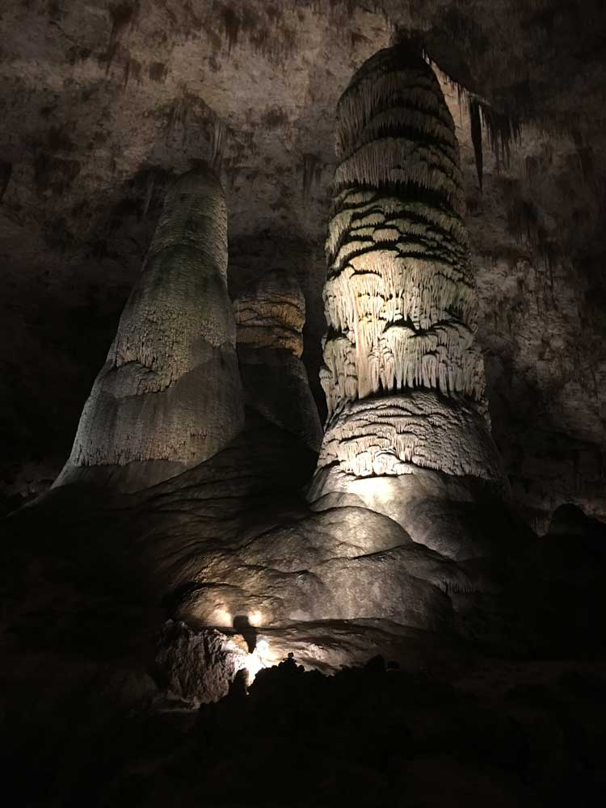
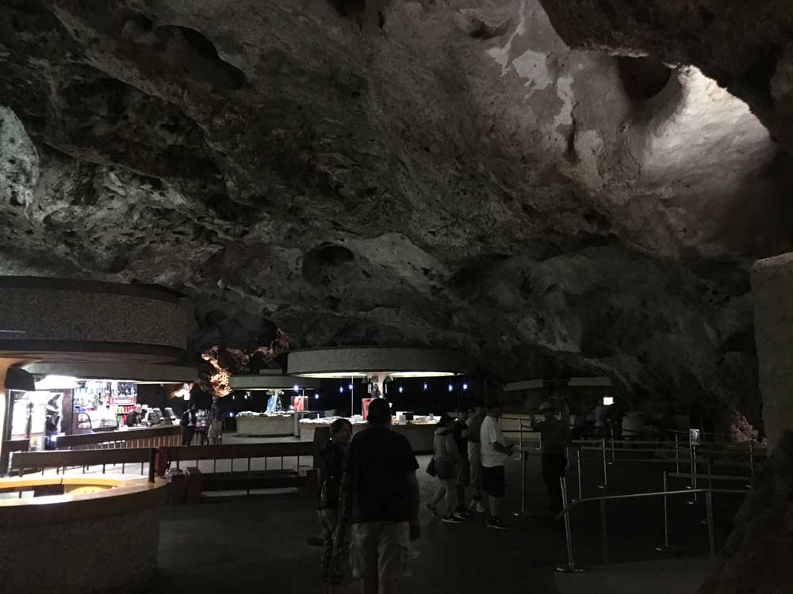
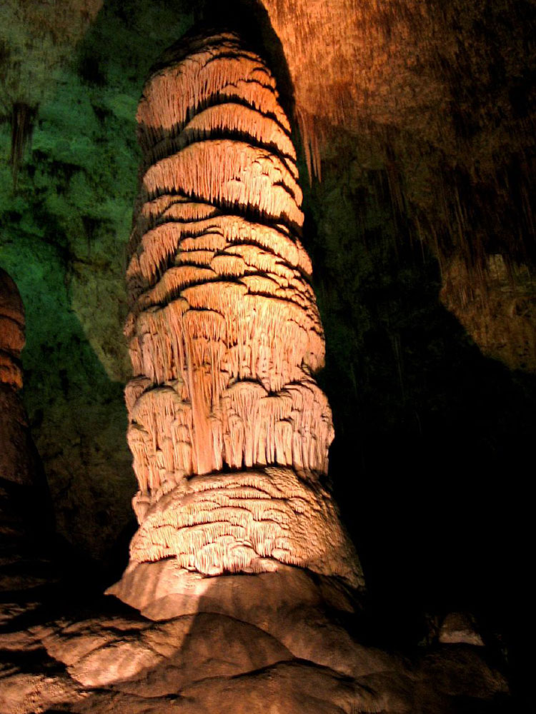